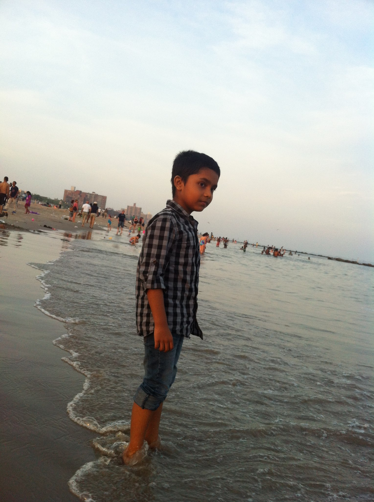
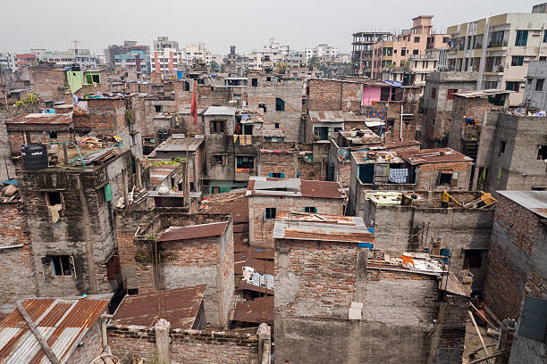
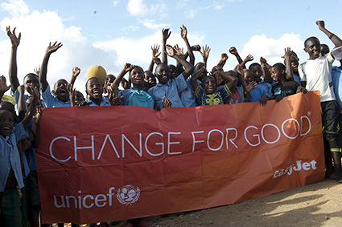
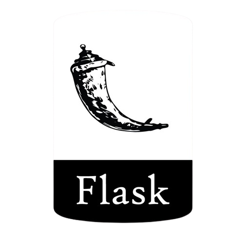
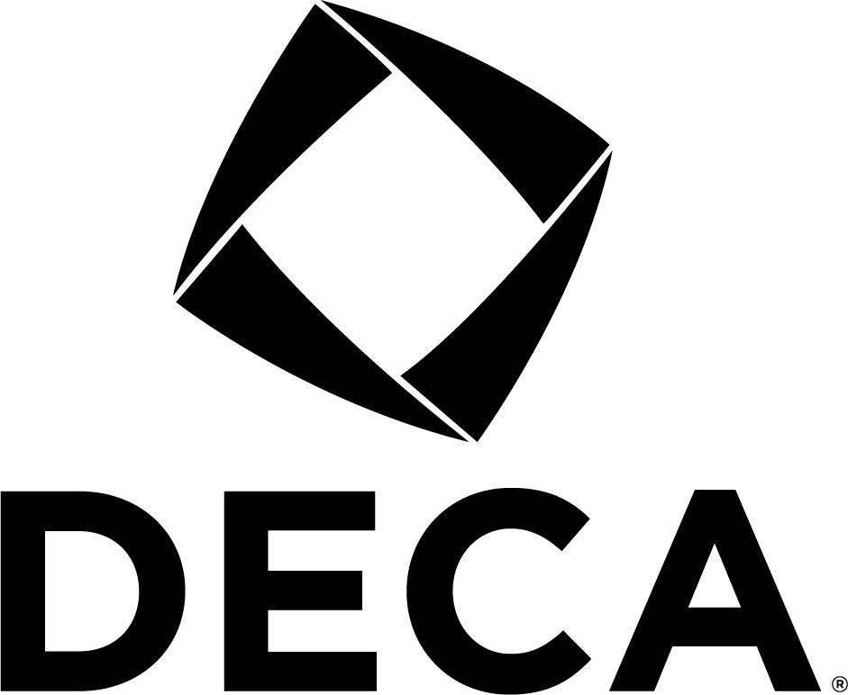
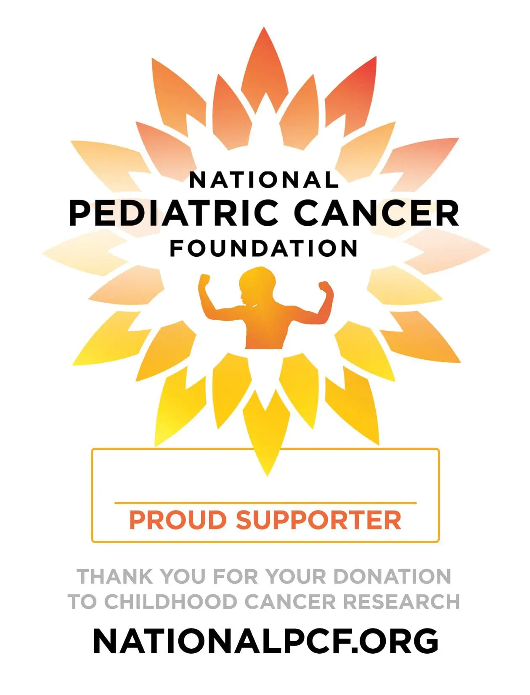

"If you set your goals ridiculously high and it's a failure, you will fail above everyone else's success."
- James Cameron
My Life Story
Each person has their life story written on the pages of the larger book. To find ourselves, we must need to find out where we are.
The beginning...
Born and raised in Bangladesh, I was always curious about things. I learned to read and write at a very young age and absolutely loved knowing about things that made me curious. Being at the center of attention allowed me to receive great care from my family, who realized I needed a better environment. Who would've thought I was destined for so much more?
As soon as I stepped foot on New York, I knew my life was about to change forever.
Being a native Bengali, Hindi, and Urdu speaker, I was quite unfamiliar with life in the Western World. There were so many customs, so many different traditions, and an entirely new language to learn. But being the curious person I was, I was able to grasp it as soon as I began Pre-K.
The funny thing was that no matter where I went, the people were all so friendly. As much as I missed home, I began to become part of this new and unique society that was all new to me. I became Bengali-American, with Indian and Pakistani origins. Just like the pieces of a puzzle, I felt connected to this new place.

Adjusting...
I joined a K-8 school, which I was granted admission to after taking the Gifted & Talented exam in New York City. This school had an amazing community and amazing people who genuinely cared about passion, academics, and more. This was the first time I began to gain real childhood friends elsewhere and actually fit into life here.
For 9 years, I studied extremely hard at a place that I finally belonged in, and stood out here as well. Being the first person in my family generation to have an opportunity in America, I knew I had to take my chance seriously. And so, I worked hard, recieved the highest grades, and stayed at the top.
However, at one point I realized that grades aren't the most important thing in the world. Things that fascinate me were. I began doing extra things, including joining the Chess Team, Debate Team, and Math Team. I even began doing Karate outside of school to teach myself to be the best disciplined version of myself.
I began to mature and realize the world on a whole different level. I was involved in community service, various projects, and gave more time for my own mental health. After graduating from this school, I became a very balanced person. What does that mean? It means that I mastered my other strengths, including Time Management, Physicality, Socialness, and every other aspect of my daily life to the point where nothing was impossible for me.
A New Chapter
At the end of 7th Grade, life took one of the hardest turns. I was preparing for the hardest exam of my life: The SHSAT. Living up to my parents' expectations, I spent months studying to get into my dream high school.
It was almost like a dream when I came home from school the day results came out. My parents, who had worked their entire lives in our home country to bring me here, were in tears after seeing me get accepted into Stuyvesant. I couldn't believe it, but I also knew that this was the place where I would become the real Nafis Mahim.
At first, I was very overwhelemed by the experience. Everyone here seemed to be extremely smart that I no longer felt like I stood out like I did for my entire life. I began to fall into this deep hole not being able to feel happiness again. Then one day, my dad said something that changed me forever.
"The world is like a treadmill," he said. "It is made for the people that can run it, not the ones who can't. If you want to create a destiny, you need to run faster than it. After all, life from the beginning is survival of the fittest. You want to help yourself? Then you have to do it." For the next couple of months, I transformed into a completely new person. I topped all my classes, and joined the Red Cross, Debate Team, Business Team, Cultural Clubs. etc.
I learned to study things and look at things differently. I became more involved in activities. I realized that all this time, I created a nonexistent limit for myself when I knew I still had a destiny to fulfill. And so, I picked up my passion of Computer Science from my uncle, who specializes in it, and the passion of Entrepreneurship and Business from my father, who is an expert in that.
No matter where I went, I always ended up in my roots: my family. I learned Computer Science in Scratch and Code.org when I was in Elementary School. Then I learned Python in Middle School along with HTML and CSS. And in High School, I learned JavaScript. I always had in me, and so did my other hobby of learning to invest in the stock market.
Thanks to the amount this school has pushed me under stress, I knew what I was going to do in the future...


Desires of Life
Why do I want to become an Entrepreneur? There are many answers actually. The easy answer is usually profit for most. I don't care about making my own profit, but rather profit for a certain specific purpose. Coming from a 3rd World Country, I've seen poverty up close, and at one point in my life have been in that position before arriving here. Because I was the first in my hometown and village to come to such a prestigous place, many people look up to me there. I couldn't have gotten where I am without my people's support, and this is where my idea comes in.
I have a mission of returning the favor by picking up my hometown from any form of poverty, and then my city, and then my entire country. Then, if possible, I want to carry this purpose to others who also need someone to help them. I feel that my firsthand experiences allow me to sympathize and qualify well for this.
Alongside doing a double major in Computer Science and Business, doing humanitarian work like this from Entrepreneur dollars is a good idea. There are so many billionares and millionares in today's world, who, if they worked together, could have been able to help save millions of people worldwide. But what frustrates me sometimes is that so many of them don't use their money gained. So when someone says, "You work hard in life to earn good money," I question the concept with, "Then what?" This often leaves people puzzled. Exactly.
I believe in setting a good precedent as one who rose among the people to help the same people. My eventual dream job is at Google or Apple, and then I plan to create my own Biotech/Biopharmaceutical Company. With enough profit, I plan on long-term investment which I would use the profits for my cause.
My Projects
Calculator App (Kivy)
Created a basic, Android version of the vertical-faced Apple iPhone Calculator using Python and Kivy. It serves as a baseline for future Kivy projects and can do all the basic operations of arithmetics, as well as percents.
User Database Website (Flask)

Created a Flask-plugin website using Python, JavaScript, HTML, and CSS. The website's goal was to serve as a practice/sample project for web development. Users are able to sign up, log in with an account, and write a specific note that is saved in the database that they can access later.
Cancer Awareness Campaign


Started a Campaign while partnering with DECA, and competiting in a Business competition to raise awareness about cancer. The procedure was to create social media pages, conduct door-to-door marketing, and publish videos for donations to the National Cancer Pediatric Association.